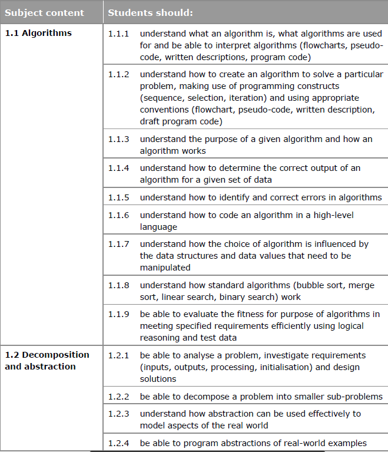

Algorithms
Algorithms are sets of step-by-step instructions for the computer to follow. They are at the heart of all computer programs.
You can think of an algorithm as similar to a food recipe. If you make a sandwich, you follow a set of steps to put the different ingredients together. You bring ingredients together, assemble them as you like, and produce a final product - the sandwich. If you were asked to write down instructions to make a sandwich, you could create a written algorithm.
Within your sandwich algorithm you would need to specify:
- inputs - ingredients and quantities
- the process - recipe or method
- output - what the finished sandwich will be like
Use of algorithms
Algorithms are used in all areas of computing. Examples include:
- PageRank - Google's search engine uses a highly effective algorithm called PageRank to find the best matches for search terms. PageRank decides which pages are listed first when you search for something. This algorithm is highly sophisticated and played an important role in Google Search's success.
- Weather forecasting - the Met Office uses weather forecasting algorithms to model weather patterns and make predictions.
Algorithms are a great way of automating computer decisions. However, automating processes can lead to errors.
For example, the Amazon website uses algorithms to decide the price of products. In 2011, the price of a book called 'The Making of a Fly' (about the molecular biology of a fly) jumped to £14 million as the pricing algorithms used by Amazon to set and update prices started outbidding each other. This raised the book price.
Designing an algorithm
Computer programs are algorithms or a collection of algorithms.
When designing an algorithm, you need to assess how complex it could be. With a food recipe, a simple command like 'spread butter on bread' could be made much more detailed. For example:
- 1.Remove lid from butter tub and place to one side.
- 2.Place 5 grams of butter on the tip of the knife.
- 3.Position the tip of the knife on the upwards side of the slice of bread with the butter between the knife and the bread.
- 4.Move the knife backwards and forwards in a sweeping motion across the bread to spread it at an even thickness.
- 5.Repeat steps 2 to 4 until one side of the slice of bread is evenly coated with butter.
- 6.Remove any excess butter from the tip of the knife.
Variables
Algorithms have values that can be constant or variable. These values are stored in a memory location and can be changed, depending on the output that is needed. For example, the main content for a sandwich could be cheese or jam. In this case 'main ingredient' would be a value which is variable. You could require one sandwich or 57 sandwiches. This would be another variable.
Bubble sort
An example of a computer algorithm is bubble sort. This is a simple algorithm used for taking a list of jumbled up numbers and putting them into the correct order. The algorithm runs as follows:
- 1.Look at the first number in the list.
- 2.Compare the current number with the next number.
- 3.Is the next number smaller than the current number? If so, swap the two numbers around. If not, do not swap.
- 4.Move to the next number along in the list and make this the current number.
- 5.Repeat from step 2 until the last number in the list has been reached.
- 6.If any numbers were swapped, repeat again from step 1.
- 7.If the end of the list is reached without any swaps being made, then the list is ordered and the algorithm can stop.
Bubble sort example
This algorithm could be used to sort the following list:
3, 2, 4, 1, 5
The first loop of the algorithm would produce:
- 3, 2, 4, 1, 5 (2<3 so the two values are swapped)
- 2, 3, 4, 1, 5 (3<4 so the two values are not swapped)
- 2, 3, 4, 1, 5 (1<4 so the two values are swapped)
- 2, 3, 1, 4, 5 (4<5 so the two values are not swapped)
- 2, 3, 1, 4, 5 (First pass completed)
Values were swapped so the algorithm needs to run again. The second loop of the algorithm would start with the final list and run again as follows:
- 2, 3, 1, 4, 5 (2<3 so the values are not swapped)
- 2, 3, 1, 4, 5 (1<3 so the values are swapped)
- 2, 1, 3, 4, 5 (3<4 so the values are not swapped)
- 2, 1, 3, 4, 5 (4<5 so the values are not swapped)
- 2, 1, 3, 4, 5 (Second pass completed)
- 2, 1, 3, 4, 5 (1<2 so the values are swapped)
- 1, 2, 3, 4, 5 (2<3 so the values are not swapped)
- 1, 2, 3, 4, 5 (3<4 so the values are not swapped)
- 1, 2, 3, 4, 5 (4<5 so the values are not swapped)
- 1, 2, 3, 4, 5 (Third pass completed)
Values were swapped so the algorithm needs to run again. This time there will be no swaps as the values are in order:
1, 2, 3, 4, 5
The algorithm has completed a loop without swapping anything and so it knows that the list is now ordered and can stop.
Pseudocode
Pseudocode is a language which isnt correct. It can be good and used before you program or create an algorithm. It is not correct, however it is in a style of a program lanuguage and can easily be read by anyone
Computer Programmers use pseudocode to help plan out the code they will need.
- For game making
- Creating websites
- Control software – robots / machinery
- ANYTHING where planning is needed = pseudocode is used to layout the tasks/actions